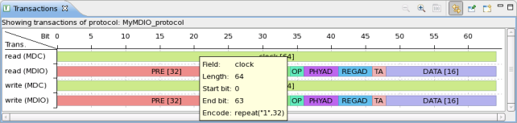

Transaction view
The transaction view is a graphical representation of the selected transaction.
It shows the associated pin roles and fields based on the structure of the current protocol loaded into the protocol editor.

By moving the mouse over a field a tooltip will be displayed showing the specification of that field.
If you double-click a field the focus will jump to the corresponding field in the protocol editor.
In case you have multiple protocols loaded, the transaction view will update automatically to show the current protocol in focus.
Note The protocol editor has to be open in order to jump to the field you
double-clicked on.
Functional changes
- Introduced in SmarTest 7.1.0